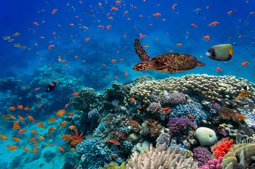

Um bioma é uma grande área geográfica que compartilha características semelhantes de clima, solo, relevo, vegetação e fauna. Segundo o Instituto Brasileiro de Geografia e Estatística (IBGE), um bioma é definido como um conjunto de vida vegetal e animal, formado pelo agrupamento de tipos de vegetação contíguos, com condições geológicas e climáticas semelhantes.
Os biomas são classificados em grandes áreas ecológicas, como biomas terrestres (por exemplo, florestas, savanas) e aquáticos (marinhos e de água doce). No Brasil, existem seis biomas principais: Amazônia, Cerrado, Caatinga, Mata Atlântica, Pantanal e Pampa.
Um ecossistema é um conjunto de organismos vivos que interagem entre si e com o ambiente físico ao seu redor. Ele é composto por:
Esses componentes interagem de forma equilibrada, formando um sistema estável. Exemplos de ecossistemas incluem florestas, desertos, rios e lagos. Cada ecossistema é único e essencial para a manutenção do equilíbrio ambiental.

A diferença entre bioma e ecossistema pode ser resumida da seguinte forma:
Em resumo, um bioma é uma grande região com características ecológicas semelhantes, enquanto um ecossistema é uma comunidade de organismos e seu ambiente físico dentro de um bioma.

Amazônia: O maior bioma do Brasil, cobrindo cerca de 49% do território nacional. Está presente nos estados do Acre, Amapá, Amazonas, Maranhão, Mato Grosso, Pará, Rondônia, Roraima e Tocantins.
Cerrado: Conhecido como a savana brasileira, ocupa aproximadamente 24% do território e está localizado principalmente nos estados de Goiás, Mato Grosso, Mato Grosso do Sul, Tocantins, Minas Gerais, Bahia, Maranhão, Piauí e Distrito Federal.
Caatinga: O único bioma exclusivamente brasileiro, cobrindo cerca de 11% do território. Está presente nos estados do Piauí, Ceará, Rio Grande do Norte, Paraíba, Pernambuco, Alagoas, Sergipe, Bahia e parte de Minas Gerais.
Mata Atlântica: Originalmente cobria cerca de 15% do território brasileiro, mas hoje resta apenas uma pequena parte devido ao desmatamento. Está presente em 17 estados, principalmente ao longo da costa leste do Brasil.
Pantanal: Uma das maiores planícies alagadas do mundo, cobrindo cerca de 1,8% do território brasileiro. Está localizado principalmente nos estados de Mato Grosso e Mato Grosso do Sul.
Pampa: Também conhecido como Campos Sulinos, cobre cerca de 2% do território brasileiro e está presente exclusivamente no estado do Rio Grande do Sul.

Caatinga: Este é o bioma predominante no estado, cobrindo a maior parte do território pernambucano, especialmente no interior. A Caatinga é caracterizada por uma vegetação adaptada ao clima semiárido, com plantas resistentes à seca, como cactos e arbustos espinhosos.
Mata Atlântica: Encontrada principalmente na Zona da Mata, ao longo da faixa litorânea do estado. Este bioma é conhecido por sua alta biodiversidade e vegetação densa e perene, incluindo espécies como o pau-brasil, o jacarandá e a peroba.
Formações Litorâneas: Incluem manguezais e restingas, presentes ao longo da costa de Pernambuco. Os manguezais são ecossistemas costeiros importantes para a reprodução de várias espécies de peixes e crustáceos, enquanto as restingas são áreas de vegetação rasteira e arbustiva.

Mata Atlântica: Este bioma é encontrado principalmente na região litorânea de Igarassu. A Mata Atlântica é conhecida por sua alta biodiversidade e vegetação densa, incluindo árvores como o pau-brasil e a peroba.
Formações Litorâneas: Incluem manguezais e restingas, que são ecossistemas costeiros importantes para a reprodução de várias espécies de peixes e crustáceos. Os manguezais são encontrados nas áreas próximas aos rios e estuários da cidade.